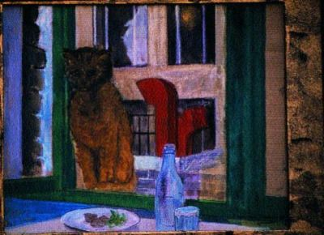

Lauriston Sokağı’ndaki lokantaya giderim öğleleri bazen; ucuz lokantadır, yemeği de iyidir üstelik, mahalledeki yapı işçileri, karşıdaki P.T.T. memurları, bazı da benim gibi yabancılar gelirler, ben epeydir gidiyorsam da yabancı sayılırım ne de olsa! Öğle yemeklerinde ara sıra gördüğüm iki yüz kiloluk kadın için patron geçen gün: – Yirmi bir yıldır tanırım diyordu, o zamanlar kaç yaşındaydı bilmem ama şimdi olsa olsa kırk beşinde! Son zamanlar zayıfladı zavallıcık hem de adamakıllı, fazla zayıfladı diyemem ama zayıfladı işte! O gün yine cumartesi, gündelik ekmeğimi çıkarmak için çalıştığım bürodan çıkıp lokantaya gittim, yer vardı, hemen oturdum, biraz sonra bir siyah geldi tezgâha; aslında lokanta bistro lokantalardan, ayakta içilecek tezgâhı da var... Kedi diye anlatıyordu Arap, pek anlıyamadım, kedi mi kaybolmuş, yoksa kedi mi bulunmuş, biraz uzakçalar benden, biraz ilerde diyordu, tekir bir kedi, her halde kayıp...

Çıktı, biraz sonra kucağında bir kedi; geldi, patronla kocası yemeğe oturmuşlardı, kedi ortalığa bırakıldı, önümdeki masada bir kız var pek güzel değil ama taze, güneş vurduğu zaman yanağındaki tüyler kelebeğin kanadındaki toz gibi parlıyor... Kedi kuyruğu havada bütün masaları birer birer dolaşıp ortalığı bir kokladıktan sonra hop diye kızın kucağına zıpladı; bıyıklarını yanağına sürüp iki elini omuzlarına koymuş adeta sulanıyor kıza kendi diliyle! Patron içeriden biraz çiğ kıyma getirdi yere koydu; kedi kızın kucağından atladı bir solukta yedi kıymayı... Qu’il a faim (amma da aç) dedi müşterilerden biri: Sokak kedisi galiba? Yanaklarında altın tüyler olan kız: – Değil, dedi! Sokak kedisi (le chat de gouttiere) böyle olur dedi, bu kadar olur, kocaman olur; bu ev kedisi! Ne işi var öyleyse dedi madam, sokakta? Üstü başı da kirli, baksanıza... Patronun karısı söze karıştı. Bazıları dedi, bırakıyorlar kedilerini, kimi vakanse giderken bırakıyor, kimi de unutuyor, mahsustan unutuyor işte, ne bileyim ben! Est-il coupe? Değil dedi Arap, hadım değil, ben baktım... Yazık dedi kız, kedileri hadım ediyorlar yazık! Ama güzel oluyorlar, dedi patronun karısı, ne güzel oluyorlar, bu kadar böyle, tosun gibi... Gine de yazık dedi kız, yapmamalı. Evet evet sesleri yükseldi ortalığa... Kedi yalana yalana ortalıkta dolaşmıya başlamıştı, patron içerden biraz daha kıyma getirdi, kedi bir solukta onu da yedi, Aç dedi servöz (garson) bu kedi aç; patronlarla beraber aynı masada yemek yiyordu; çok aç bu kedi, belki de susuz da! Patron kalktı buz dolabından bir kâseye süt koydu, kedi başını daldırıp solumadan yalamıya başladı sütü... Ev kedisi muhakkak dedi patron, bu kedi çok insancıl, baksanıza herkesle ahbap oldu, sokak kedisi olsa bu kadar sokulmaz! İnsan ya hayvan almamalı, yahut da alırsa sokağa bırakmamalı dedi servöz, ikisinden biri... Alsanıza dedi Arap, evinize götürün! Yok yok dedi kadın, çalışan insanların hayvanları çok bahtsız oluyor, sabahtan akşama kadar evde kapalı hayvan, almamak daha iyi! Benim bir köpeğim var dedi patron, un berger Allemand (Alman çoban) ama kayınpedere bırakıyorum, O Paris’in dışında, hayvan bahçede dolaşıyor, kocaman bahçe, her taraf kır, orman! Öyle olunca anlarım bak dedi müşterilerden biri... Kedi sütünü içmiş yalana yalana ortalıkta dolaşmıya başlamıştı, kuyruğu bir döviz gibi havada, herkesin yüzüne ayrı ayrı bakıyor, titrek titrek miyavlayıp bir şeyler mırıldanıyordu, altın sarısı gözlerini ara sıra kırpıyor, yalanıyor, herkesi tekrar tekrar kokluyordu! Alacak mısınız almıyacak mısınız! dedi tezgâhtaki şarabını içen sarhoş; sevimli hayvan dedi patron, ama dükkânda nasıl olur? Zaman oluyor iki gün üst üste kapalıyız, kırk sekiz saat ne yapar hayvan yalnız başına? Öyleyse geldiği yere gönderin dedi sarhoş, kedi casanier (evcil)’dir, yere bağlıdır, alıştı mı alıştı bir kere, zaten alıştı bile, baksanıza dükkânı dolaştı, herkesi ayrı ayrı kokladı, beğendi burasını, gönderemezsiniz artık! Halinden belli, iş işten geçti, gönderemezsiniz artık... Alın, dedi kediyi getiren Arap, böyle güzel kediyi Quais’lerde onbin balle’e (onbin papele) bulamazsınız... Güzel kedi doğrusu dedi kız! Yerim olsaydı ben alırdım. Yatağına da girerdi, dedi patron; baksana kucağından inmek istemiyor, kız çapkın çapkın güldü... Ne isim koymalı? dedi kız, “Lauriston” dedi birisi, “Yok yok canım, c’est pas un nom de chat (bir kedi adı değil bu) Öyleyse şey olsun dedi kız, Mimi olsun! Mimi, Zizi, Kiki lafları dolaştı bir müddet havada, nihayet Minet’ye karar verildi... Şimdi her gidişimde Minet’yi görüyorum; artık adamakıllı yerleşmiş, kendine ait şeylere resmen el koymuş, tezgâhın arkasında para çekmecesine yakın minderinde mırlıya mırlıya uyuyor, bazen ortaya çıkıp her masayı teker teker dolaşıp herkesi kokladıktan sonra kapının açılışını kollayıp sokağa fırlıyor, gözü yine sokakta, sokak kedisiydi galiba, öyle anlaşılıyor!